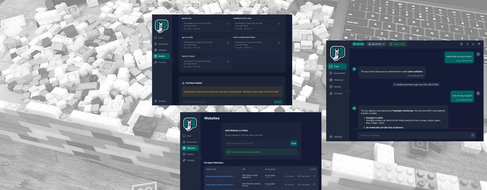

Train your local Ollama models with your own documents and websites. Experience powerful, private, and fully customizable AI right on your machine. No cloud required.

Everything you need to build a specialized AI companion, running entirely on your own hardware.
Run models entirely on your machine. Your chats, documents, and data never leave your device.
Upload PDFs, TXT, or DOCX files. Create a custom system context to chat directly with your knowledge base.
Provide website URLs to automatically scrape content and include it as context for your custom AI model.
Support for various AI models like Llama, Mistral, and Gemma. Switch dynamically mid-conversation.
Save your best system prompts, rate them, and easily apply them to shape how your AI assistants behave.
Modern dark theme with glassmorphism effects, a custom scrollbar, and native macOS window controls.
Ollama Assistant connects to your local Ollama instance. Download and install it from ollama.com.
Drag & drop PDFs or link websites in the "Documents" tab. The app extracts all the text seamlessly.
Select a base model (like Llama 3) and inject your documents to generate a personalized variant instantly.
Enable "Use Document Context" and ask your specialized assistant anything about your data.